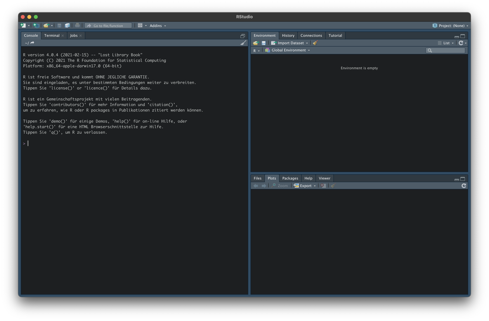
2 RStudio
In einem ersten Schritt wollen wir uns RStudio genauer ansehen. Öffne dazu jetzt RStudio.
Was du nach diesem Kapitel kannst
- Die Benutzeroberfläche von RStudio sicher bedienen.
- Pakete installieren, aktivieren und aktuell halten.
- Den Unterschied zwischen Konsole und R-Script erklären.
- Projekte anlegen und ein sauberes Arbeitsverzeichnis nutzen.
- Hilfe-Seiten zu Funktionen und Paketen aufrufen.
2.1 Benutzeroberfläche
Du solltest ungefähr diese Benutzeroberfläche (Graphical User Interface, kurz GUI) vor dir sehen (standardmäßig im hellen Theme):
Hinweis
Hintergrund: RStudio und Posit. RStudio ist die integrierte Entwicklungsumgebung für R. Die IDE heißt weiterhin RStudio, die Firma dahinter wurde 2022 in Posit umbenannt. Wenn du im Web Verweise auf „RStudio Cloud” findest, sind sie heute unter posit.cloud zu finden.
2.2 Optionen
Wir empfehlen dir, vor der intensiveren Nutzung von RStudio die folgenden Punkte in den Optionen unter Preferences bzw. Global Options zu deaktivieren:
- Restore .RData into workspace at startup — deaktivieren.
- Save workspace to .RData on exit — auf Never stellen.
Damit musst du bei jedem Neustart von RStudio Daten und Variablen neu laden — der Vorteil ist ein wirklich frischer Workspace ohne unsichtbare Altlasten aus früheren Sitzungen. Das ist die Grundlage für reproduzierbares Arbeiten.
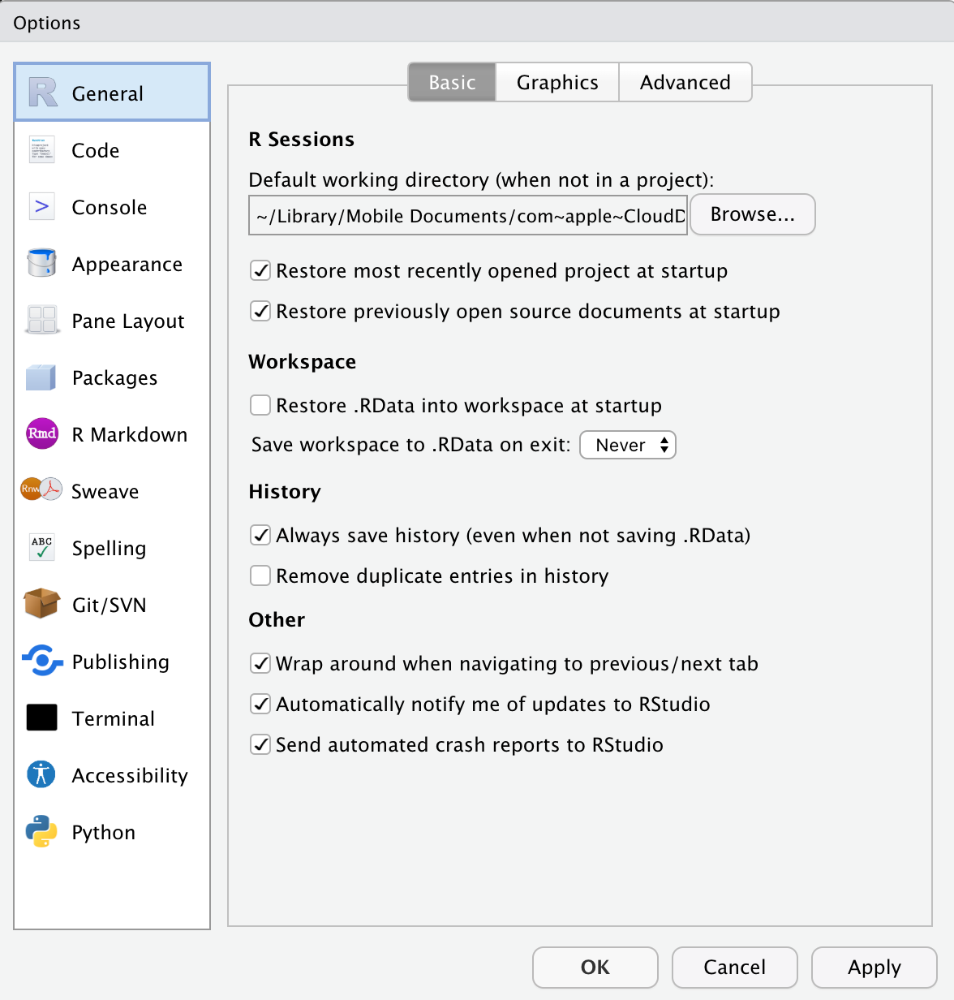
Wenn du an einer anderen grafischen Darstellung interessiert bist (zum Beispiel ein dunkles Farbschema), schau unter Appearance rein.
2.3 Konsole
Die R-Konsole ist das Herzstück der Oberfläche und führt deinen Code direkt aus oder interpretiert ihn aus einem geöffneten R-Script. Das >-Zeichen ist die Eingabeaufforderung (prompt).
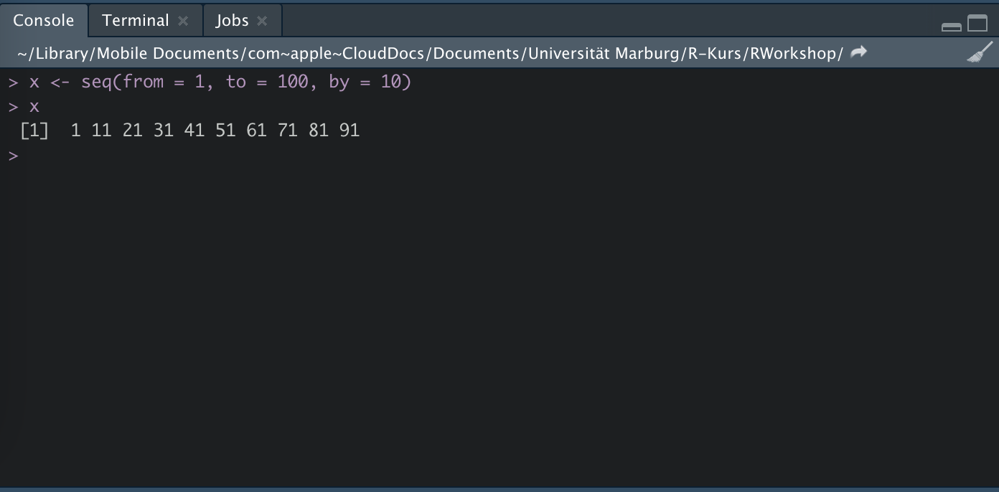
Du kannst die Konsole gerne als Übungsfeld für deine ersten Eingaben nutzen — zum Beispiel als Taschenrechner:
2 + 3
## [1] 52.4 Environment und History
Im Reiter Environment findest du das Global Environment (Dropdown). Hier werden alle Objekte (Variablen, Datensätze, Funktionen), die du angelegt hast, gespeichert.
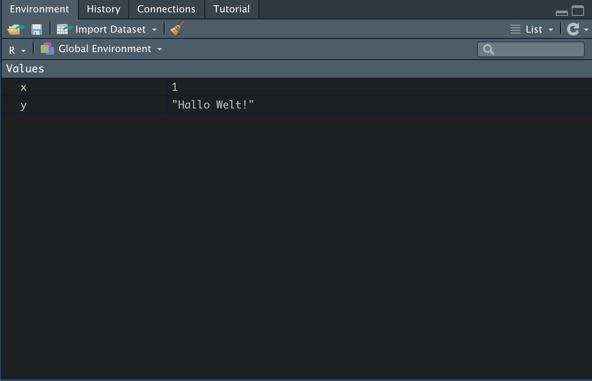
Unter History siehst du alle Befehle, die du bisher ausgeführt hast. Per Doppelklick werden sie zurück in die Konsole kopiert und können dort modifiziert oder erneut ausgeführt werden.
Tipp
Tipp. Die History rufst du auch direkt über die Tastenkombination cmd (macOS) bzw. strg (Windows) + ↑ in der Konsole ab.
2.5 Files
Unter dem Reiter Files kannst du deine Datenstruktur einsehen und ein Arbeitsverzeichnis (working directory) festlegen.
Das Arbeitsverzeichnis erleichtert das Einlesen von Datensätzen erheblich — vorausgesetzt, du arbeitest nicht ohnehin in einem Project (das empfehlen wir, siehe unten). Setze das Arbeitsverzeichnis dorthin, wo dein Datensatz liegt.
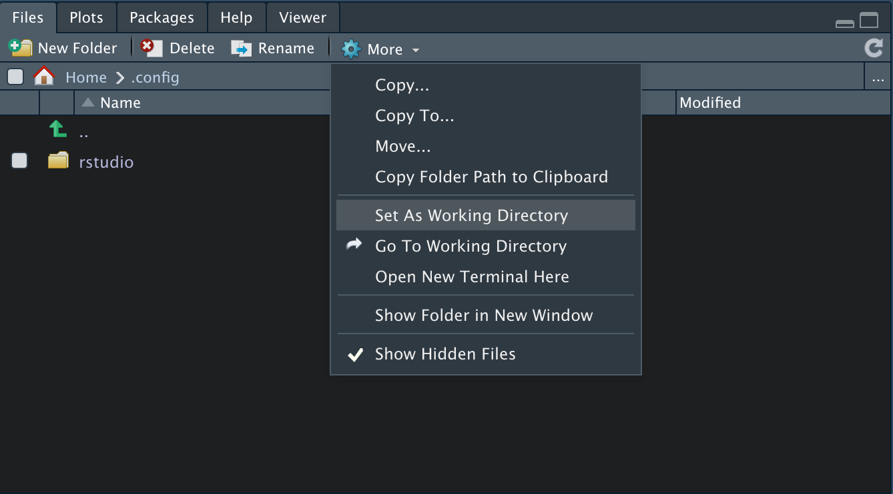
2.6 Packages
R bringt von Haus aus — als base R — schon eine ganze Reihe nützlicher Funktionen mit. Für viele Analyseschritte sind sie aber zu abstrakt: Wir greifen deshalb auf zusätzliche Pakete zurück, die unsere Funktionsbibliothek erweitern.
In diesem Buch arbeiten wir bewusst mit nur zwei Ökosystemen:
- das tidyverse für Datenmanipulation und Visualisierung,
- mariposa für die statistische Analyse (entwickelt an der Universität Marburg).
2.6.1 Installation
Das tidyverse ist auf CRAN, dem zentralen R-Paket-Archiv, verfügbar und lässt sich direkt installieren:
install.packages("tidyverse")Damit hast du in einem Schritt die Pakete dplyr, tidyr, ggplot2, readr, purrr, tibble, stringr, forcats und lubridate installiert.
mariposa wird derzeit über GitHub vertrieben. Du brauchst dafür einmalig das Paket remotes:
install.packages("remotes")
remotes::install_github("YannickDiehl/mariposa")Für die Grafik-Kombinationen in Kapitel 6 brauchst du außerdem noch patchwork:
install.packages("patchwork")2.6.2 Aktivierung
Installierte Pakete musst du in jeder R-Sitzung mit library() aktivieren:
Alternativ kannst du Pakete auch über den Reiter Packages (rechts unten in RStudio) installieren und aktivieren — das ist gut für einen schnellen Überblick, aber für reproduzierbares Arbeiten ist der Code-Weg besser.
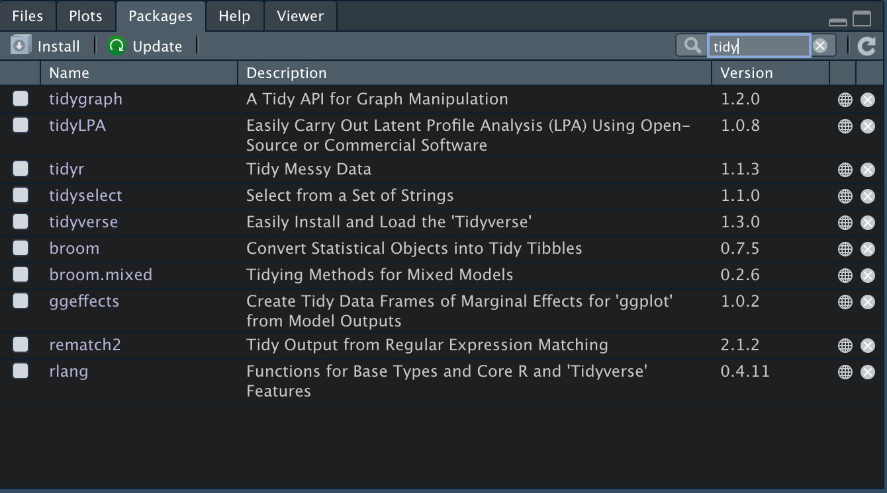
2.6.3 Pakete aktuell halten
Updates lassen sich über den Reiter Packages oder per Code anstoßen:
update.packages(ask = FALSE)Das tidyverse aktualisiert sich am sichersten über eine erneute Installation:
install.packages("tidyverse")mariposa wird über remotes aktualisiert:
remotes::install_github("YannickDiehl/mariposa")
Warnung
Vorsicht. Wenn du in der Mitte eines Projekts ein Paket aktualisierst, ändert sich potenziell das Verhalten deiner Funktionen. Pflege Pakete zwischen Projekten oder dokumentiere die genutzten Versionen mit sessionInfo().
2.7 Help
Auch wer täglich mit R arbeitet, kann sich nicht alle Funktionen merken. R bietet dir deshalb über den Reiter Help eine vollständige Funktionsreferenz. Manche Einträge wirken am Anfang sperrig, sind nach einiger Übung aber die zuverlässigste Quelle.
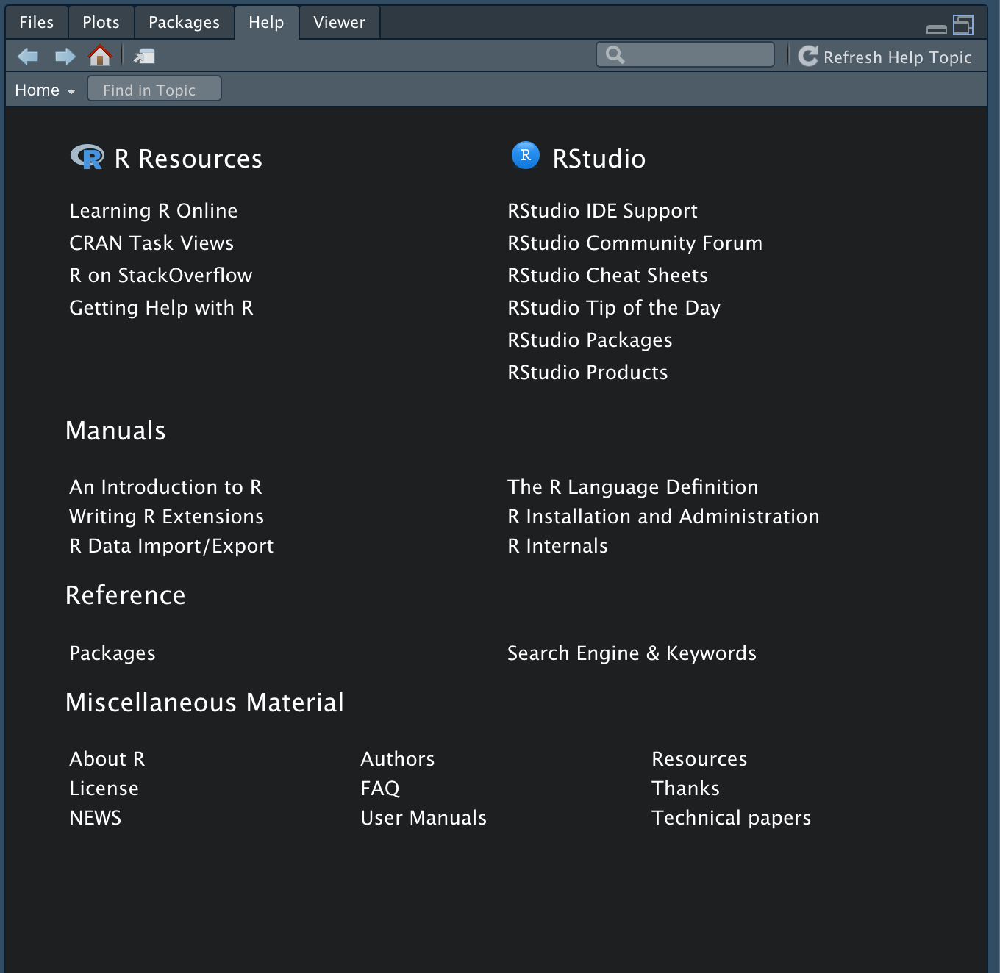
Wenn du eine Funktion im Kopf hast, geht es am schnellsten über die Konsole — ein Fragezeichen vor den Funktionsnamen reicht. Hier zum Beispiel für den gewichteten Mittelwert aus mariposa:
?w_meanUm alle Funktionen eines Pakets aufzulisten, öffnest du den Reiter Packages, suchst das Paket und klickst es an. Du landest in der Paketreferenz.
Viele Entwickler:innen pflegen zusätzlich eigene Webseiten für ihre Pakete — das sind oft die besten Einstiegspunkte:
- tidyverse.org/packages — Übersicht aller tidyverse-Pakete mit Vignetten und Funktionsreferenz.
- yannickdiehl.github.io/mariposa — Funktionsreferenz, Vignetten zu Labels, Gewichtung, deskriptiver Statistik, Korrelation, Regression, Skalenanalyse und SPSS-Kompatibilität.
Tipp
Tipp. Auf den Paket-Webseiten ist der Reiter Articles (oder Vignettes) Gold wert. Dort findest du längere Anwendungsbeispiele, die R-eigene Hilfe nicht abbilden kann.
Wenn du im Web nach Hilfe suchst, ist Stack Overflow die zentrale Anlaufstelle. Ergänze deine Suchanfrage mit dem Schlagwort Stack Overflow — fast jedes typische R-Problem wurde dort schon einmal beantwortet.
2.8 Arbeiten mit RStudio
Jetzt geht es an die praktische Arbeit mit RStudio.
2.8.1 Projects
Bevor du mit Daten arbeitest, lohnt es sich, ein Project anzulegen. Über File → New Project → New Directory → New Project öffnest du die entsprechende Maske, vergibst einen Namen und einen Speicherort.
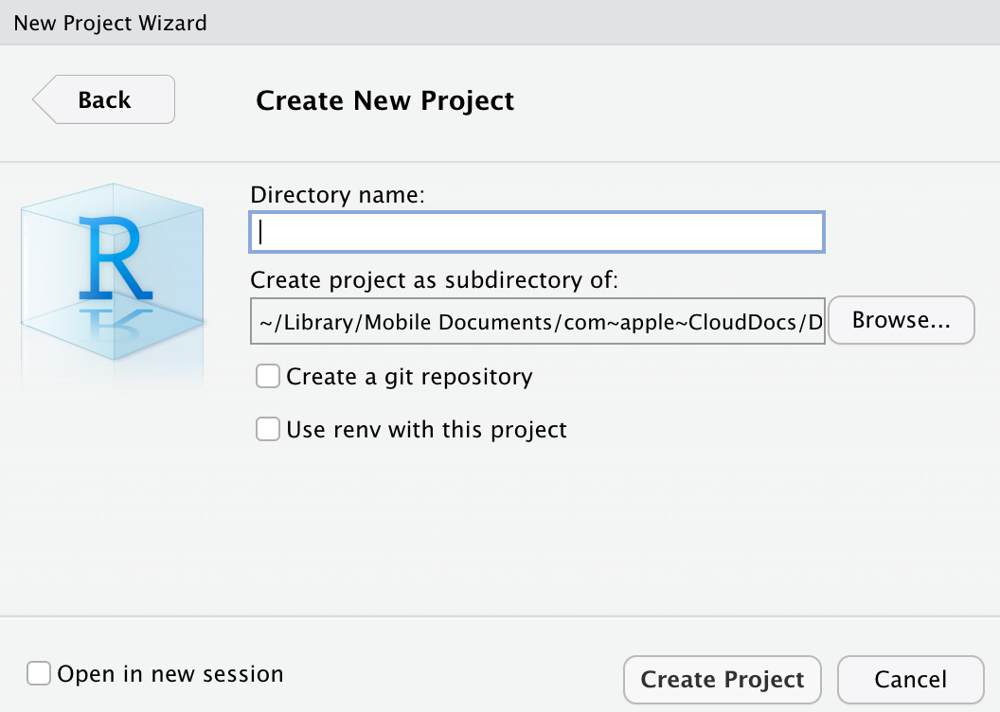
Im nächsten Schritt schiebst du deine Datensätze in den Projektordner.
Was du davon hast:
- Alle geöffneten Files werden beim Start des Projekts (per Doppelklick auf die
.Rproj-Datei) wieder geladen. - Du kannst beliebig viele Projekte parallel öffnen und zwischen ihnen wechseln.
- Das Arbeitsverzeichnis ist automatisch der Projektordner — du musst dich nicht mehr darum kümmern, vollständige Pfade einzutippen.
2.8.2 Konsole oder R-Script?
Du hast zwei Wege, R zu nutzen:
1. Befehle direkt in die Konsole eingeben. Sinnvoll, wenn du schnell etwas ausprobieren willst oder einen Befehl nur einmal brauchst.
Bei unvollständiger Eingabe wartet die Konsole auf den Rest:
> seq(1, 100, 5
+Hier fehlt die schließende Klammer. Entweder du ergänzt sie, oder du brichst mit Esc ab. Friert R einmal ein, hilft Session → Interrupt R (oder das rote Stoppschild über der Konsole). Im Notfall startest du die ganze Session über Session → Terminate R neu.
2. Befehle in einem R-Script speichern (vergleichbar mit der Syntax-Datei in SPSS).
Ein neues Script öffnest du über das Symbol mit dem weißen Blatt und grünem Kreuz (oben links) — oder per Tastenkürzel cmd/strg + shift + N. Der Vorteil: dokumentierte, reproduzierbare Arbeit.
Tipp
SPSS → R. Das R-Script ist das Pendant zur SPSS-Syntax-Datei. Du arbeitest weiterhin in der Syntax — nur in einer anderen Sprache. Die meisten SPSS-Workflows lassen sich Schritt für Schritt übertragen, oft sogar in weniger Zeilen.
Wichtig: R-Scripts werden von oben nach unten gelesen. Du kannst Variablen also im Laufe des Scripts überschreiben oder neu zuweisen.
Ein erstes Beispiel:
2 + 3Mit Run (oder cmd/strg + Enter) führst du die aktuelle Zeile aus.
## [1] 5Der Output erscheint in der Konsole. Im nächsten Schritt weisen wir das Ergebnis einer Variable (auch Objekt genannt) zu, damit wir es weiterverwenden können:
var1 <- 2 + 3var1 ist jetzt im Environment sichtbar — mit dem Wert 5.
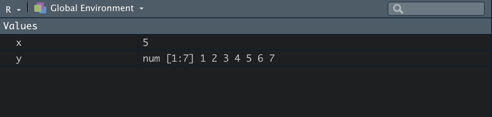
Warnung
Vorsicht: Zuweisungsoperator. Für Zuweisungen verwendest du <-, nicht =. Das = funktioniert zwar in vielen Fällen auch — es führt aber in komplexeren Kontexten (Funktionsargumenten) zu subtilen Bugs. Mach dir die Konvention <- zur Gewohnheit.
2.8.3 Tab Completion
RStudio hat eine sehr hilfreiche Funktion: Tab Completion. Während du tippst, erscheint ein Dropdown mit Vervollständigungs-Vorschlägen. Du kannst es jederzeit über die Tab-Taste aufrufen. Tippst du zum Beispiel w_mean, schlägt RStudio dir gleich die mariposa-Funktion vor.
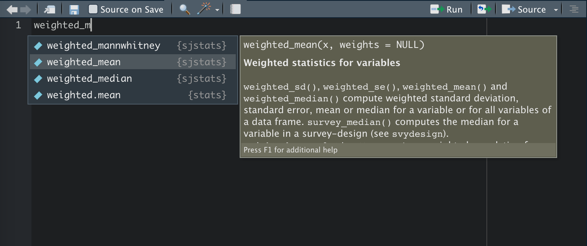
Stehst du innerhalb der Klammern einer Funktion und drückst Tab, listet RStudio alle Argumente auf. Funktionsargumente sagen einer Funktion, welche Daten verarbeitet werden und wie. In mariposa-Funktionen heißt das erste Argument typischerweise data, gefolgt von den interessierenden Variablen und optional weights = wghtpew für eine Gewichtung.
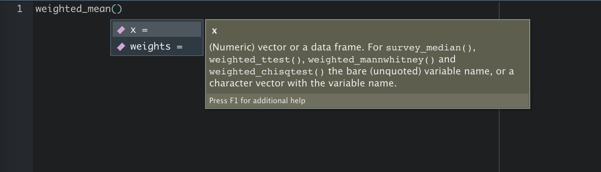
Wenn sich zwei Pakete eine Funktionsbezeichnung teilen, kannst du die Mehrdeutigkeit über den Paket-Präfix auflösen — paketname::funktion. Das erzeugt auch eine Funktionsliste, wenn du nach :: Tab drückst:
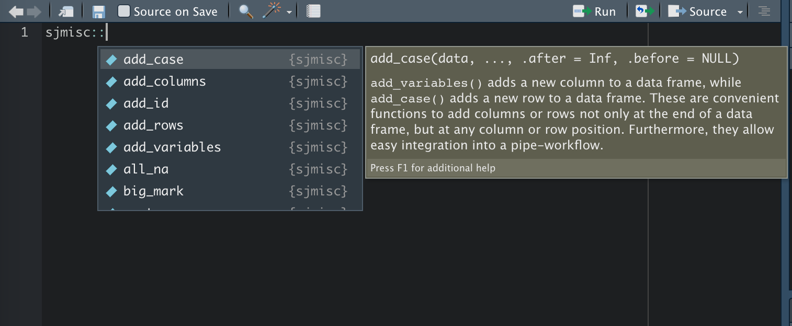
2.8.4 Nützliche Tastenbefehle (Shortcuts)
Diese Tastenkombinationen sparen dir auf Dauer viel Zeit:
| Befehl | Wirkung |
|---|---|
| Hast du schon kennengelernt: | |
cmd/strg + ↑
|
Vorherige Befehle in der Konsole anzeigen |
cmd/strg + shift + N
|
Neues Script erstellen |
cmd/strg + Enter
|
Eingabe ausführen |
cmd/strg + S
|
Geöffnete Script-Datei speichern |
cmd/strg + option + S
|
Alle geöffneten Scripts speichern |
| Weitere nützliche Befehle: | |
cmd/strg + shift + Enter
|
Gesamtes Script ausführen |
cmd/strg + shift + R
|
Abschnitts-Überschrift im Script einfügen |
cmd/strg + shift + C
|
Zeile als Kommentar setzen |
control/strg + L
|
Konsole leeren |
cmd/strg + shift + A
|
Code-Block re-strukturieren |
| Für die folgenden Kapitel: | |
option/alt + -
|
Zuweisungspfeil <- erzeugen |
cmd/strg + shift + M
|
Pipe-Operator |> (bzw. %>%) erzeugen |
Tipp
Tipp. Eine vollständige Liste aller verfügbaren Tastenkürzel bekommst du in RStudio über option/alt + shift + K.
Hinweis
Hintergrund: |> oder %>%? RStudio bietet seit Version 2021.09 den nativen Pipe |> (verfügbar ab R 4.1). Davor war der magrittr-Pipe %>% Standard. Wir verwenden in diesem Buch durchgängig |>. Unter Tools → Global Options → Code kannst du einstellen, welcher Operator beim Shortcut eingefügt wird — wir empfehlen die native pipe.
Was du jetzt weißt
- Du kennst die wichtigsten Bereiche der RStudio-Oberfläche.
- Du kannst Pakete installieren, aktivieren und aktualisieren — insbesondere tidyverse und mariposa.
- Du weißt, wann sich die Konsole, wann ein Script lohnt.
- Du legst Projekte an und nutzt das automatische Arbeitsverzeichnis.
- Du findest Hilfe über
?funktion, die Paket-Reiter und die Online-Dokumentation.
Im nächsten Kapitel steigen wir in die Programmiersprache R ein.